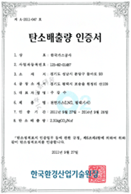
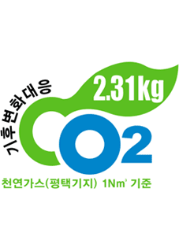

기후변화대응
대한민국을 대표하는 저탄소에너지 기업인 한국가스공사는 지구온난화 방지를 위한 국제적 노력에 동참하고자 2008년도부터 자발적 온실가스 인벤토리를 구축하여 배출량을 산정하였고 사업장별 에너지 절감 활동을 활발히 추진하고 있습니다.
온실가스 배출 저감 활동
온실가스 인벤토리 구축및 배출량 산정
KOGAS는 사업장 안에서의 직, 간접적인 온실가스 배출원을 규명하여 해당 배출 원으로 인한 각각의 온실가스 배출량을 산정하였습니다.
온실가스 배출정보를 정확하게 파악함으로써 온실가스 감축 활동의 추진 기반을 마련하였습니다.
정부 온실가스 에너지 목표관리제 이행
KOGAS는 정부의 저탄소 녹색성장 주요정책의 하나로 시행중인 ‘온실가스/에너지 목표관리제’의 관리업체로 지정되었습니다. 이에 따라 매년 3월 공사의 온실가스/에너지 명세서를 정부에 제출하고, 다음년도의 온실가스 감축목표를 정부로부터 부여 받게 됩니다. KOGAS는 감축목표 달성을 위해 사업소별 감축사업을 발굴하여 추진함으로써 온실가스 감축 노력에 최선을 다하고 있습니다.
※ 목표관리제도 개요
온실가스 다배출 및 에너지 다소비사업장을 관리업체로 지정하고 온실가스· 에너지 목표를 부여하여 명세서 검증 등 이행실적을 정부가 종합적으로 관리하는 제도
- 명세서 제출(매년 3월말)
- 감축목표설정(매년 9월말)
- 사내감축목표할당(매년 10월말)
- 이행계획제출(매년 12월말)
- 이행실적보고(매년 3월말)
평택기지본부 탄소성적표지 인증 획득
한국가스공사 평택기지본부는 탄소성적표지(탄소배출량)인증을 가스업계 최초로 획득하였습니다. 이 인증은 제품 및 서비스의 전과정에 걸쳐서 발생하는 온실가스 배출량을 CO2로 환산하여 제품에 표시해 주는 라벨링 제도입니다.
※ 탄소성적표지제도
일상 생활용품, 가정용 전기기기, 서비스 등 모든 제품의 온실가스 발생량을 CO2 발생량으로 환산하여 라벨형태로 제품에 부착하는 것을 말하며, 탄소성적표지 인증을 통해 지구온난화 대응을 위한 저탄소 녹색생산·소비를 지원 하는 제도로 탄소배출량 인증(1단계)과 저탄소상품 인증(2단계) 으로 운영되고 있습니다.
-  탄소배출량 인증서
-  탄소라벨링
탄소정보공개 프로젝트(CDP,Carbon Disclosure Project) 참여
KOGAS는 탄소정보공개를 통하여 기후변화관련 투자리스크 또는 투자기회를 명확히 측정할 수 있도록 공사의 정확한 기업정보를 전세계 금융/투자기관들에 제공하고 있으며, 궁극적으로는 관련 투자리스크를 최소화할 수 있도록 탄소정보를 공개하고 있습니다.
※ 탄소정보공개 프로젝트(CDP,Carbon Disclosure Project)
2003년부터 매년 시행된 이 프로젝트는 영국에 있는 CDP라는 비영리기관이 전 세계 연기금을 포함한 금융/투자기관들을 대신하여 세계 주요 상장회사들의 기후 변화 이슈에 대응하기 위한 전략과 탄소배출에 관한 정보를 수집,분석하는 글로벌 프로젝트입니다.